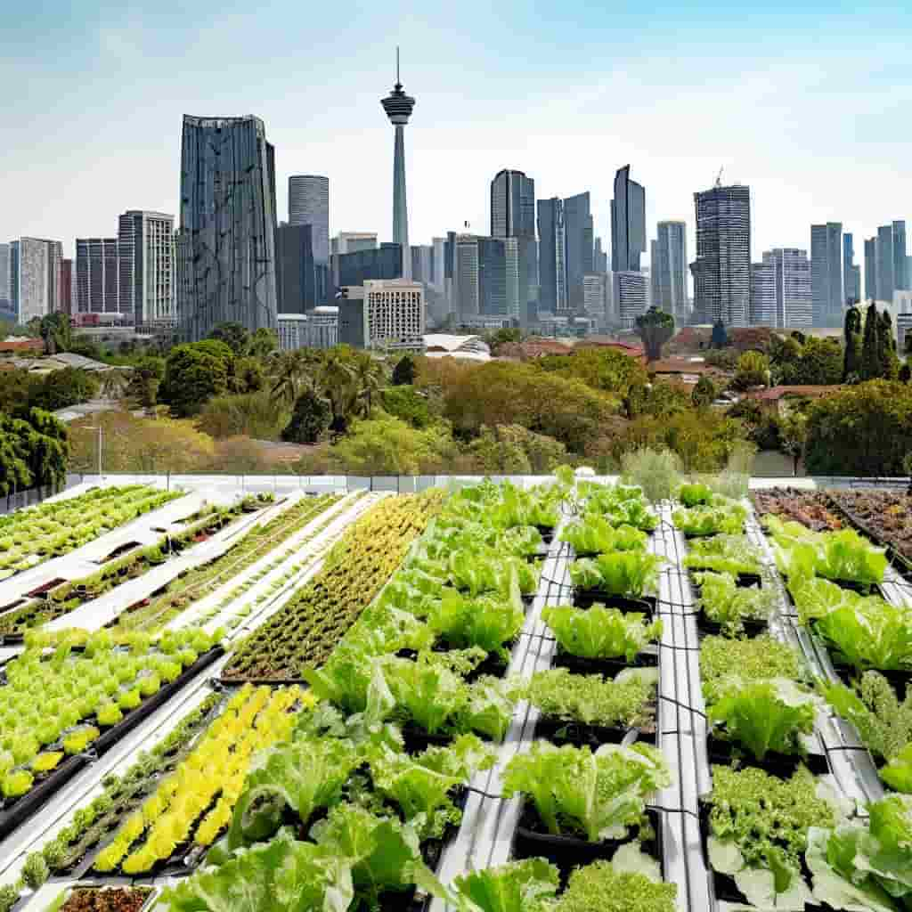
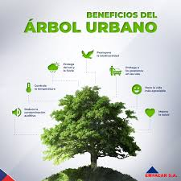
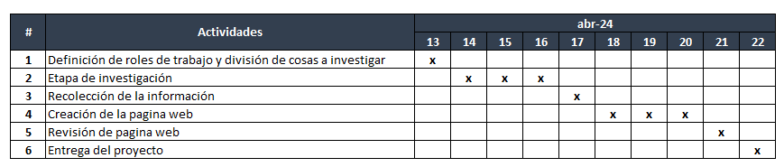
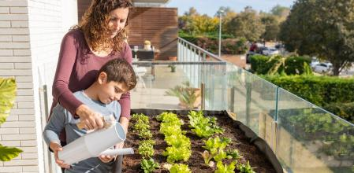
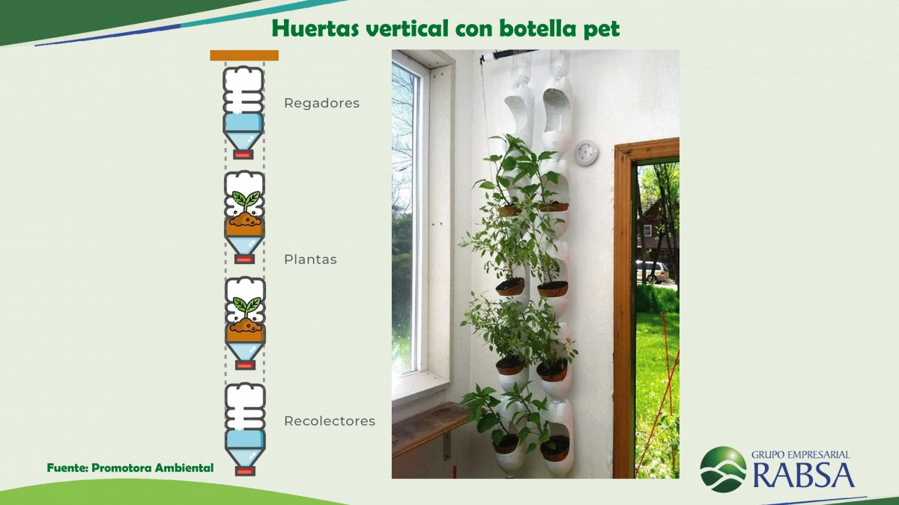
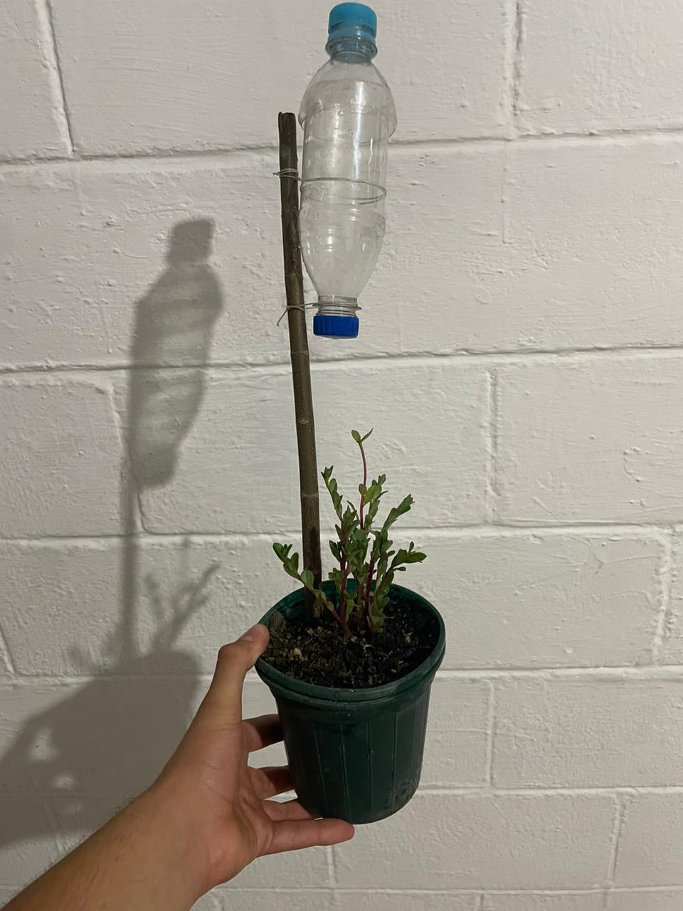

Plantamiento del problema
: En la actualidad existe un gran problema, que es la sobrepoblación, la cual afecta muchos aspectos de nuestra vida cotidiana , una de estas es la falta de espacios, ya sea para vivienda, para siembra de alimentos, para que las personas se movilicen tranquilamente, etc. Gracias a esto muchas personas no pueden obtener buenos alimentos, debido a la falta de lugares y recursos. Por esto, muchas personas tienen falta de buena alimentacion y nutrientes que les ayudan a estar saludables con ello las personas en zonas urbanas buscan ayuda en las zonas más pobladas o como las zonas rurales , donde pueden encontrar mayores beneficios de alimentos, aunque en lugares asi igual la falta de alimentos o siembra de cultivos es poca , por que los ciudadanos ocupan espacios fértiles para crear viviendas o construcciones eso arruina las tierras secándose o dañandolas y asi ya no puedan producir alimentos para la población
Hipótesis
Poner fin al hambre, lograr la seguridad alimentaria y la mejora de la nutrición y promover la agricultura sostenible
• Aumentar las inversiones, incluso mediante una mayor operación internacional, en infraestructura rural, investigación agrícola y servicios de extensión, desarrollo tecnológico y bancos de genes de plantas y ganado a fin de mejorar la capacidad de producción agrícola en los países en desarrollo, en particular los países menos adelantados.
• Garantizar sistemas de producción de alimentos sostenibles e implementar prácticas agrícolas resilientes que aumenten la productividad y la producción, que ayuden a mantener los ecosistemas, que fortalezcan la capacidad de adaptación al cambio climático, condiciones climáticas extremas, sequías, inundaciones y otros desastres y que mejoren progresivamente la calidad de la tierra y el suelo.
Metodología
• Realizar una investigación tomando en cuenta las diferentes organizaciones, por ejemplo: FAO ONU OMS y documentos gubernamentales con la erradicación del hambre. Esto ayudara a comprender los enfoques que estas organizaciones nos dan y mejorar las practicas.
• Hacer una observación en las diferentes comunidades rurales o urbanas afectadas por la inseguridad alimentaria nos ayudara a ver nuestro entorno y, como se comprenden las practicas alimenticias, los factores de distribución de alimentos y los socioeconómicos que influyen en la disponibilidad y accesibilidad de alimentos.
• Tratar de dar una charla a os diferentes medio o colegios que se haga conciencia del hambre cero, utilizar técnicas de análisis para identificar patrones emergentes Este análisis ayudará a generar insights significativos sobre los determinantes del hambre y las estrategias efectivas para abordarlo.
Definición clara y detallada
Nosotros hemos hecho investigación sobre el HAMBRE CERO porque así podemos promover la adopción de una alimentación saludable al explicar sus beneficios con el fin de mejorar la calidad de vida y prevenir enfermedades crónicas Se prevé que más de 600 millones de personas en todo el mundo se enfrentarán al hambre en 2030, lo que pone de relieve el inmenso desafío de alcanzar el objetivo de hambre cero.
Las personas que experimentan inseguridad alimentaria y moderada normalmente no pueden llevar una dieta sana y equilibrada de forma habitual debido a limitaciones de ingresos u otros recursos.
Por lo que queremos que la seguridad alimentaria requiere un enfoque pluridimensional: desde la protección social para salvaguardar alimentos inocuos y nutritivos, especialmente para los niños, hasta la transformación de los sistemas alimentarios para lograr un mundo más inclusivo y sostenible. Será necesario realizar inversiones en zonas rurales y urbanas y en protección social para que las personas más pobres tengan acceso a los alimentos y puedan mejorar sus medios de subsistencia.Explicación exhaustiva de los pasos a seguir
• Diseñar un sistema de huerto colgante para promover la buena alimentación entre las personas, que sea accesible y fácil de replicar utilizando materiales reciclados o de bajos costo para reducir el impacto ambiental, promover una vida sana y concientizar a las personas de las malas prácticas que estamos llevando a nuestras comunidades
• Se pueden hacer cambios en la vida cotidiana en el hogar, en el trabajo y en la comunidad, apoyando a los agricultores o a los mercados locales y tomando decisiones sostenibles sobre la alimentación, apoyando la buena nutrición para todos y luchando contra el desperdicio de alimento
Cronograma de actividades
Recursos requeridos
Procedimientos específicos:
Identifica el problema específico: En este caso investigar sobre problemas de alimentación causados por la falta de espacio para cultivar alimentos.
Buscar fuentes confiables de información: Dirígete a fuentes confiables como la Organización de las Naciones Unidas para la Alimentación y la Agricultura (FAO), la Organización Mundial de la Salud (OMS), el Programa Mundial de Alimentos (PMA) u otras organizaciones gubernamentales y no gubernamentales dedicadas a la agricultura y la alimentación.
Utilizar palabras clave específicas: Para encontrar información relevante, utilizar palabras clave que describan el problema. Algunas palabras clave podrían incluir "seguridad alimentaria", "agricultura urbana", "cultivos de espacio reducido", "alimentos nutritivos en entornos urbanos", etc.
Explorar estudios y documentos académicos: Buscar estudios científicos, informes y documentos académicos que aborden la relación entre la falta de espacio para plantar y los problemas de alimentación. Puedes utilizar bases de datos académicas como PubMed, Google Scholar o ScienceDirect para encontrar investigaciones relevantes.
Consultar informes y estadísticas: Revisar informes y estadísticas publicadas por organizaciones internacionales, gobiernos y ONGs sobre seguridad alimentaria, agricultura urbana y disponibilidad de alimentos en entornos urbanos.
Buscar proyectos y programas innovadores: Investiga proyectos y programas innovadores que aborden la escasez de espacio para plantar y promuevan soluciones creativas para garantizar el acceso a alimentos nutritivos en entornos urbanos. Puedes encontrar información sobre estos proyectos en sitios web de organizaciones dedicadas al desarrollo sostenible y la seguridad alimentaria.
Evaluar la calidad y relevancia de la información: evaluar críticamente la calidad y relevancia de la información que encuentres. Verifica la credibilidad de las fuentes, examina la metodología utilizada en los estudios y considera
Materiales necesarios:
- Macetas pequeñas o recipientes de plástico
- Tierra para macetas o sustrato para plantas
- Plantas o semillas de tu elección (hierbas, vegetales de hojas pequeñas, flores)
- Cuerdas o cadenas resistentes
- Tijeras
Procedimeinto
Selecciona las plantas: Escoge las plantas que deseas cultivar en tu huerto colgante. Las hierbas como el perejil, el cilantro o la albahaca son buenas opciones, al igual que los vegetales de hojas pequeñas como la lechuga o la espinaca. Asegúrate de que se adapten bien a las condiciones de luz disponibles en el lugar donde colgarás tu huerto.
Prepara las macetas: Llena las macetas con tierra para macetas hasta aproximadamente 2/3 de su capacidad. Asegúrate de que tengan agujeros en la parte inferior para un drenaje adecuado.
Crea los soportes: Para cada maceta, corta una longitud de cuerda o cadena lo suficientemente larga como para colgar la maceta a la altura deseada. Asegúrate de que todas las cuerdas o cadenas tengan la misma longitud si quieres que tus macetas cuelguen a la misma altura. Luego, ata un extremo de cada cuerda o cadena a la maceta.
Cuelga las macetas: Instala los ganchos en el lugar donde deseas colgar tu huerto colgante. Asegúrate de que los ganchos estén firmemente sujetos a una estructura resistente. Luego, cuelga cada maceta en su respectivo gancho.
Riega y cuida tus plantas: Asegúrate de regar regularmente tus plantas según las necesidades de cada especie. Además, verifica que estén recibiendo suficiente luz solar o luz artificial adecuada si estás cultivando en interiores. Retira las hojas marchitas o enfermas y fertiliza según sea necesario.
Realismo, factibilidad y adecuación para alcanzar los objetivos
De acuerdo con la metodología en nuestro proyecto es lograr alcanzar una meta favorable para la población y ayudar a escasez de alimentos en la sociedad , con ello queremos aportar una ayuda de realizar una campaña donde presentaremos el proyecto para mejorar la fertilidad e siembra de los cultivos , procurando definir un buen uso de materiales reciclados para el cuido del medio ambiente , el proyecto consistirá en realizar huertos colgantes para que las personas logren una alimentación sana donde sea accesible y fácil de usar , con ellos también pondremos en cuenta que los niños logren una educación gracias a ello donde puedan ver como realizar eso y poner en práctica y así logren una dieta equilibrada y saludable. También fomentaremos hábitos saludables de alimentación con el proceso de cultivos de alimentos frescos y en la preparación de comidas nutritivas con los productos que se cosechen
Estado de arte
Estado del arte De acuerdo con nuestra investigación la falta de alimentos en la sociedad se ha dado gracias a la sobrepoblación que existe hoy en dia en diversas partes del mundo , muchas personas suelen morir por hambre ejemplo África con una población de 1,216 miles de millones la cual casi el 75% de su gente muere por falta de comida , la incidencia del hambre en el mundo se mantuvo relativamente sin cambios de 2021 a 2022, pero sigue estando muy por encima de los niveles anteriores a la pandemia de COVID-19, ya que afectó a alrededor del 9,2 por ciento de la población mundial en 2022, frente al 7,9 por ciento en 2019 , así que nosotros queremos mejorar eso con nuestro proyecto de “Huertos colgantes” donde todas las personas lograran crear huertos con cultivos saludables propios y mejorar la alimentación
Antecedentes relacionados a la temática enfocada a la investigación.
El Dr. Miguel Altieri es un experto en agricultura sostenible y seguridad alimentaria. Su investigación se ha centrado en cómo diseñar y gestionar huertos de manera que sean beneficiosos para el medio ambiente y productivos para la alimentación. Ha encontrado que los huertos sostenibles pueden mejorar la seguridad alimentaria local al aumentar la disponibilidad de alimentos frescos y nutritivos, al tiempo que reducen la dependencia de fertilizantes y pesticidas que pueden dañar el suelo y el agua.
La Dra. Vandana Shiva es una científica y activista de la India que ha investigado la agricultura tradicional y la soberanía alimentaria. Su trabajo se ha centrado en cómo las prácticas agrícolas ancestrales pueden ser una solución para alimentar a la población sin dañar el medio ambiente. Sus investigaciones han demostrado la importancia de preservar la diversidad genética de los cultivos y promover sistemas alimentarios basados en la equidad social y ambiental.
El Dr. Daniel López García es un investigador español especializado en agroecología y desarrollo rural. Ha estudiado cómo los huertos urbanos y periurbanos pueden beneficiar a las comunidades locales. Sus investigaciones han revelado que los huertos sostenibles en áreas urbanas pueden mejorar la seguridad alimentaria al proporcionar acceso a alimentos frescos y saludables, así como promover la participación comunitaria y la gestión sostenible de los recursos naturales.
Producto final
Nuestro proyecto final tiene como objetivo ser fácil de crear y muy económico , también buscando que las personas tengan fácil acceso a sus materiales y que sea fácil y sencillo de mantener y no quita mucho espacio, con el fin que sea fácil para producir alimento sin la necesidad de mucho espacio tiempo y cuidados